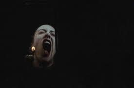

- 55 min
- — Sebastian Rivas
- — Emma Terno
- — Daniel Zea
- — Êkheía — Bastien Roblot, Olivia Martin
- — Jean-Cyrille Burdet
- — Géraldine Kosiak
À Monaco, le Printemps des Arts fait fleurir la musique Télérama
Heureuses retrouvailles au Printemps des Arts de Monte-Carlo ResMusica
Le ballet en musiques contemporaines La Clef · musique contemporaine
Snow on Her Lips Congrès AMP